Operating Documentation
Direction 5670006, Rev# 1
Discovery MR750w GEM Service Methods
Module Version 12.0, Version Date 10/21/11
Operating Documentation |
| Required Persons | Preliminary Reqs | Procedure | Finalization |
|---|---|---|---|
| 3 | 0 min | 8 hours | 0 min |
This procedure describes the replacement of the XRMw gradient coil using Gradient Coil Insertion and Lift Kit 2164744-8.
| Item | Qty | Effectivity | Part# | Manufacturer | |
|---|---|---|---|---|---|
| Gradient Coil Insertion and Lift Kit | 1 | - | 2164744-8 | - | |
| Passive Shim Tray Extraction Tool | 1 | - | 5325761 | - | |
| Water Removal Pump Kit | 1 | - | 5269683 | - | |
| B0 Power Supply | 1 | - | 2141701 | - | |
| Network Analyzer Kit | 1 | - | 5336593 | - | |
| 5 Gallon Pail | 1 | - | 2239133 | - | |
| Floor Sign, Warning: Authorized Personnel Only (included with Safety Signage Kit 46-258770G4) | 1 | - | 2289812 | - | |
| Nitrile Gloves | 1 | - | 46-194427P400 | - | |
| Nonabsorbent Protective Clothing (long sleeve shirt and pants (one per person) | 1 | - | - | - | |
| Nonferrous Safety Shoes (one pair per person) | 1 | - | - | - | |
| Safety Glasses (one pair per person) | 1 | - | - | - | |
| Cut Resistant or Leather Gloves (one pair per person) | 1 | - | - | - | |
| Flash PPE | 1 | - | - | - | |
| Item | Qty | Effectivity | Part# | Manufacturer |
|---|---|---|---|---|
| Isopropyl Alcohol, 70%, USFS-200 | 1 | - | - | - |
| Cable Ties | 100 | - | 46-252283P68 | - |
| Red Loctite® #271 | 1 | - | - | - |
| Never Seize | AR | - | 46-294151P8 | - |
| Clean Lint Free Towels (Kimwipes™) | AR | - | - | - |
| Dielectric material FRU | 1 | - | 5423650 | - |
| ||||
| STRONG MAGNETIC FIELD! | ||||
| FERROUS MATERIALS CAN BECOME DANGEROUS PROJECTILES IN THE PRESENCE OF THE MAGNETIC FIELD PRODUCED BY THE MAGNET. | ||||
| DO NOT BRING ANY FERROMAGNETIC TOOLS OR EQUIPMENT INTO THE MAGNET ROOM. |
| ||||
| Personal injury and equipment damage | ||||
| Strong Magnetic Field | ||||
| When servicing any magnetic equipment, it is critically
important that the service engineer consciously plan the path to be
taken when moving highly ferrous devices in the magnet environment.
the path should be as far from the magnet as practical and avoid high
flux-density fields. Safety Requirements
When planning a service path, it is critical that the path be clear and sufficiently wide. Ensure that there are no trip hazards, obstacles, clutter, slippery surfaces or other items even partially restricting the path. If there are portable obstacles in a path, remove them from the area and replace them after the service action is completed. It is required to walk the path prior to beginning service to ensure that there is sufficient space through which to pass for yourself and the object being serviced. |
| ||||
| The jack on the Tube Jacking Assembly is ferrous. | ||||
| Personal injury or equipment damage may result if taken too close to the magnet. | ||||
| Keep as far away from magnet bore as possible when removing from magnet room. Always keep the tube jacking assembly mounted and screwed to the Aluminum coil cradle when used in the magnet room. |
| ||||
| ELECTRICAL SHOCK HAZARD! | ||||
| CONTACT WITH CONNECTORS LEADING TO AN ENERGIZED POWER SUPPLY CAN CAUSE ELECTRICAL SHOCK. | ||||
| FOLLOW LOCKOUT/TAGOUT PROCEDURES WHILE PERFORMING SERVICES TO ELECTRICAL CONNECTION COMPONENTS. |
| ||||
| Electrical Shock Hazard! | ||||
| Coolant circulating through the gradient coil is in contact with live electrical conductors. Using wrong type of coolant may result in electrical shock. | ||||
| Always use coolant specified by DVw gradient coil service procedure. |
| ||||
| Dangerous Work Area! | ||||
| Use of heavy equipment for coil removal and replacement presents hazards to all personnel in the area. | ||||
|
| Condition | Reference | Effectivity |
|---|---|---|
Read the Hart ID information of the RF Body Coil. Look for the “BoardRevision” information (8 or 16) and record it. This value is needed to restore Body Coil dielectric material to default in Finalization, Step 5. Illustration 1: How to read Hart ID Information
| - | - |
Power to PGR Cabinet is turned off and LOTO procedures are implemented. (See LOTO for the PGR PDU/Gradient Subsystem.) | - | - |
Coolant circulation pump is turned off and LOTO procedures are implemented. (See LOTO for Heat Exchanger Cabinet (HEC).) | - | - |
Remove end bells and patient support bridge from the magnet bore in conformance with the appropriate procedures before starting to install a gradient coil. Refer to Rear End Bell Removal and Installation and Bridge and Longitudinal Drive Belt Replacement. | - | - |
If the magnet is ramped, remove all passive shim trays from the XRMB coil prior to the installation and store them in a safe place. See "Reference" column for applicable documentation containing procedures for removing the passive shim trays. Passive shim trays are highly ferrous. Heed all warnings in safety section 3.3. | Procedure for replacing shim trays can be found in the Magnet and Cryogens Subsystem Manual. For MR750w, see Direction Number 5670009. For MR450w, see Direction Number 5670004. | - |
Remove Body Coil by referring to RF Body Coil Replacement. | - | - |
| NOTE: | Nitrile Gloves must be worn when performing coolant removal. |
Turn off PVC Valves in coolant supply and return lines at the service-end of the XRMw Coil.
Place an empty five gallon bucket close to the service-end to accept discharge coolant. (See Illustration 2.)
Illustration 2: Draining Manifold Coolant

Remove the phenolic clamp that secures the manifold extension to the magnet.
Disconnect the coolant inlet and outlet lines from the XRMw Coil. (See Illustration 2.)
Attach drain hose to the water return hose on the XRMw coil.
Connect pump air hose to the water supply line on the XRMw coil.
Pump the air pump and observe the coolant draining from the XRMw coil. Continue to drain coolant from the XRMw coil until no significant flow appears at the outlet draining into the container. This should take about five minutes.
Follow customers procedure for proper disposal of coolant.
There are a total of 14 cooling circuits; six inner bore cooling circuit, six Z inner cooling circuits, and two Z outer cooling circuits. All 14 circuits must be cleared.
| ||||
| Deionized water coolant is used to cool the XRMw. It is critical that XRMw draining process is performed as described below in order to prevent freeze damage that can destroy internal coil plumbing during return transport (ie. shipment over moutain passes, etc.) making coil unrepairable. | ||||
| NOTE: | Nitrile Gloves must be worn when performing coolant removal. |
| NOTE: | There are six inner bore cooling pipes that need to be cleared. |
Remove XRMw Manifolds. (See XRMw Manifold Replacement .)
| NOTE: | It is preferred that coolant be removed from the XRMw coil outside of the scan room. However, coolant can be removed in the scan room when another location is not available. |
Connect the air pump to inlet 1i of the inner bore cooling circuits. (See Illustration 3.) Connect drain hose from 1o to bucket.
Illustration 3: Inner Bore Cooling Circuits
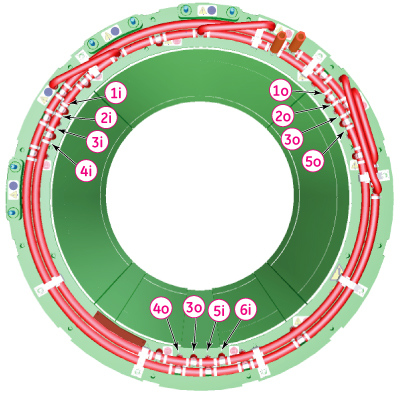
Blow air into inlet 1i until no more water emerges from outlet 1o.
Repeat Step 2 and Step 3 between inlets 2i through 6i and 2o through 6o. (See Illustration 3.)
| NOTE: | There are six Z inner cooling circuits that need to be cleared. |
For circuit A, connect the air pump to inlet 5 of the Z inner bore cooling circuit. Connect the drain hose from outlet 1 (of the Z inner bore cooling circuit) to bucket. (See Illustration 4.)
Illustration 4: Z Inner Bore Cooling Circuits - Inlets and Outlets
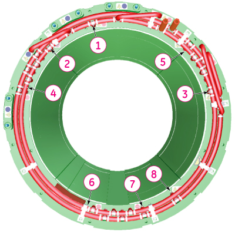
For circuit A, block inlets 6 and 8 and blow air in inlet 5 until no more water emerges from outlet 1. (See Table 1.)
Table 1: Z Inner Bore Cooling Circuits - Inlets and Outlets
| Circuit | Air Inlet | Air Outlet | Block Off | ||
| A | 5 | 1 | 6 | 8 | Blow air in inlet until no more water emerges from outlet |
| B | 5 | 6 | 1 | 8 | |
| C | 8 | 6 | 1 | 5 | |
| D | 7 | 3 | 2 | 4 | |
| E | 4 | 3 | 2 | 7 | |
| F | 4 | 2 | 3 | 7 | |
| NOTE: | The outer circuits are most likely to still contain a substantial quantity of water. |
There are two Z outer cooling circuits with inlets and outlets (1i, 1o, 2i, and 2o). (See Illustration 5.) To blow out the circuits, connect air pump to the inlet and drain hose (from outlet to bucket), and blow through the circuit until no more water emerges from the corresponding outlet .
Illustration 5: Z Outer Bore Cooling Circuits - Inlets and Outlets
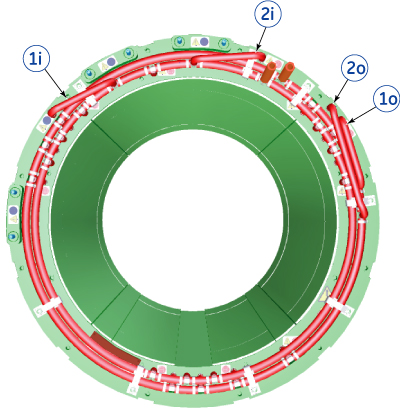
After all 14 circuits have been blown through with air, and no more water emerges from the outlets, the XRMw coil can be considered free from water.
Follow customers procedure for proper disposal of coolant.
Confirm power to PGR Cabinet is turned off and LOTO procedures are implemented.
At the service end, remove the safety covers from the end of the Y and XZ Busbar cable connections. (See Illustration 6.)
Illustration 6: Y and XZ Busbar Cables (Service End)
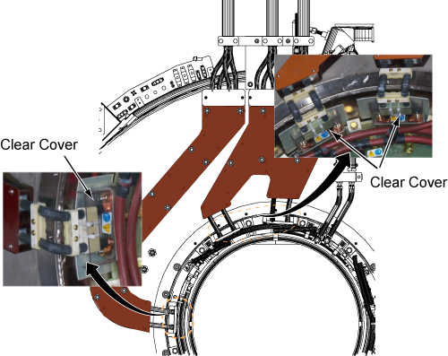
| NOTE: | DO NOT remove the clamps on the busbar leads. |
Remove 6 (six) M10 brass nuts and Nord-lock washers that are securing the busbar lugs to the coil. Slide the busbar terminal lugs off from the studs on the coil. Discard Nord-lock washers since they will not be reused. (See Illustration 7.)
Illustration 7: Y and XZ Busbar Cable Connections
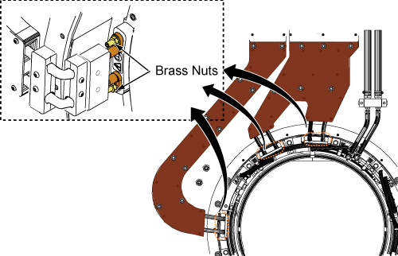
Remove the following cables:
Gradient coil temperature sensor cable at the rear of the magnet
Gradient coil ground cable
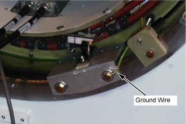
Mark with pen along the edge of front body coil mount brackets and remove them.
| NOTE: | Mounting brackets should be restored to the original location after the replacement of XRMw and the marking on Magnet is very important. |
Illustration 8: Front Mounting Brackets
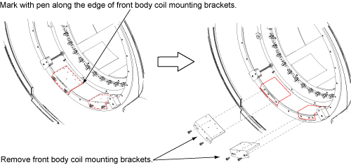
Obtain the two Tube Guide Roller Assemblies (5308402) and Mounting Plates (5161983, 5161985) from the Gradient Coil Insertion and Lift Kit's shipping crate. Make sure the Tube Guide Roller Assemblies are tightly attached to the XRMw Mounting Plates. (See Illustration 9.)
Illustration 9: Roller Assembly and Mounting Plates

Attach three adapter plates (5338222) to the gradient coil patient end at 3, 9, and 12 o'clock positions with M10 x 20mm bolts. (See Illustration 10 and Illustration 12.) Attach one M10 nut to the bolts as shown in Illustration 11.
Illustration 10: Adapter Plate on Gradient Coil - Patient End
Illustration 11: Bolt with Nut Installed
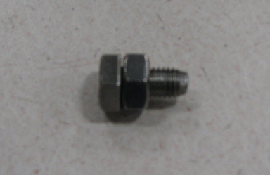
Attach two adapter plates (5338223) to the gradient coil service end at the 3 and 9 o'clock positions with M10 x 20mm bolts. (See Illustration 12.) Attach one M10 nut to the bolts as shown in Illustration 11.
Illustration 12: Adapter Plates on Gradient Coil - Service End
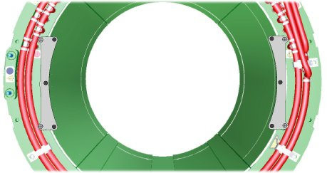
Attach adapter plate (5338224) to the gradient coil service end at the 12 o'clock position with M10 x 20mm bolts. (See Illustration 10.) Attach one M10 nut to the bolts as shown in Illustration 11. Different adapter plates are used for the front and rear of the XRMw gradient coil.
| ||||
| Make sure that all bolts that secure adapter plates to the installation plates are securely tightened. | ||||
Align the mounting holes of the Patient End Mounting Plate (5161985), including Guide Roller Assembly, with adapter plates (5338222), which are already attached to the gradient coil. Secure installation plate to the adapter plates using M10 x 20mm bolts and M10 nuts. (See Illustration 13.)
Illustration 13: Mounting Plate with Roller Assemblies - Patient End
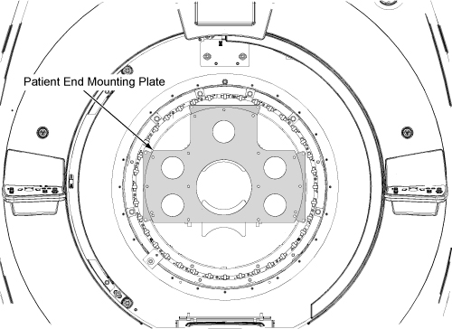
Align the mounting holes of the Service End Mounting Plate (5161983), including Guide Roller Assembly, with adapter plates (5338223 and 5338224), which are already attached to the gradient coil. Secure installation plate to the adapter plates using M10 x 20mm bolts and M10 nuts. (See Illustration 14.)
Illustration 14: Mounting Plate with Roller Assemblies - Service End
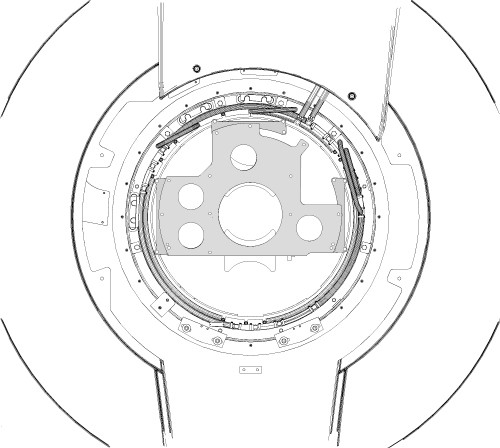
Remove two Axial stops from Rear End.
Illustration 15: Remove Rear Axial Stop
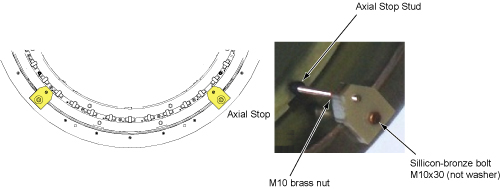
Obtain Tube Support Plate Assembly 2284928-2 from the Gradient Coil Insertion and Lift Kit's shipping crate.
Remove the two Lower Standoffs from the Tube Support Plate. (See Illustration 16.)
Attach Wing Adaptors (5339882) to the Tube Support Plate with stainless steel 0.75”-16 x 1.25” long bolts. (See Illustration 16.)
Illustration 16: Support Plate with Wing Adapters
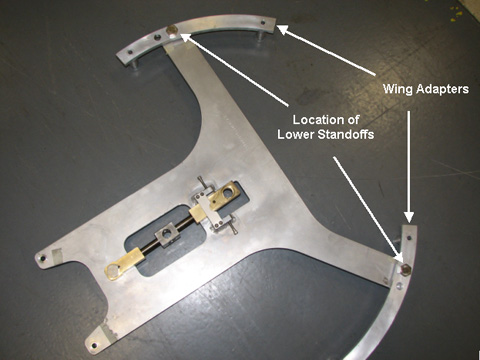
Prior to installing the Tube Support Plate, remove the rear service end wedges at the 1 and 2 locations. (See Illustration 18.)
Attach the Tube Support Plate to the magnet service-end using the 100mm M10 x 25 SS studs (5303994), SS washers and M10 nuts included in the Gradient Coil Insertion and Lift Kit. Make sure the studs are inserted 3/8” (13mm) into the magnet. Make sure the six extension spacers face towards the Magnet Interface Ring and nuts are securely tightened. (See Illustration 17.)
Illustration 17: Support Plate Attached on the Interface Ring
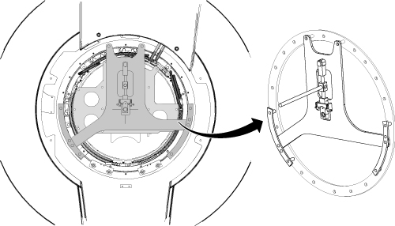
Remove axial stops from patient end of the magnet.
Illustration 18: Axial Stops and Wedges
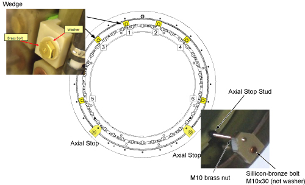
Remove Wedges at locations 1 through 4 (in that order) from the patient end of the magnet. (See Illustration 18.) Do not remove wedges from locations 5 and 6 at this time.
Remove Wedges at locations 1 through 4 (in that order) from the service end of the magnet. (See Illustration 18.) Do not remove wedges from locations 5 and 6 at this time.
| ||||
| The jack on the Tube Jacking Assembly is ferrous. | ||||
| Personal injury or equipment damage may result if taken too close to the magnet. | ||||
| Keep as far away from magnet bore as possible when removing from magnet room. Always keep the Tube Jacking Assembly mounted and screwed to the aluminum coil cradle when used in the magnet room. |
Place Tube Jack Assembly (5191132) in the Cart. Make sure the back of the Jack Assembly fits properly into the Cart. (See Illustration 19.)
Illustration 19: Jack assembly placement

Maneuver the Gradient Insertion Cart to the patient-end of the magnet. Position the cart in front of the magnet with a gap of at least 2 inches (50.8 mm) between the cart and the Magnet Interface Ring. The 2-inch gap is required for lower wedges removal. (See Illustration 20.)
Illustration 20: 2-inch Gap Between Magnet and Cart
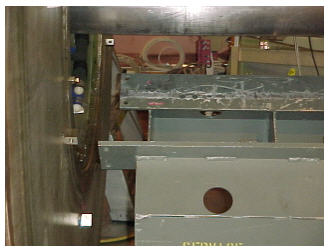
Center the cart left-to-right with respect to the magnet bore.
Release the hand lever on the cart handle to set the brakes. This will keep the cart from moving after the cart is aligned with the bore.
Obtain the Male Insertion Tube (2284929) and Tube Standoff (5191626).
Attach the Tube Standoff to the Male Insertion Tube using the four-inch, 0.375-16UNC Hex Socket Screw (5303993) included in the Gradient Coil Insertion and Lift Kit.
Once the Standoff is secured to the Tube, attach the Tube Pilot Shaft to the Standoff as shown in Illustration 21.
Illustration 21: Attaching Standoff to Insertion Tube
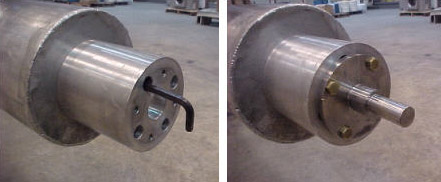
Remove the PVC shield from the brass thread of the Male Insertion Tube. (See Illustration 22.)
Illustration 22: PVC Shield for Brass Thread

Slide the Male Insertion Tube through the Tube Guide Roller Assemblies at both sides of the XRMw. Push the Pilot Shaft through the Support Plate mounting bearing. Insert a nonmagnetic safety pin through the hole in the Pilot Shaft. (See Illustration 23.)
Illustration 23: Tube Pilot Shaft and Support Plate
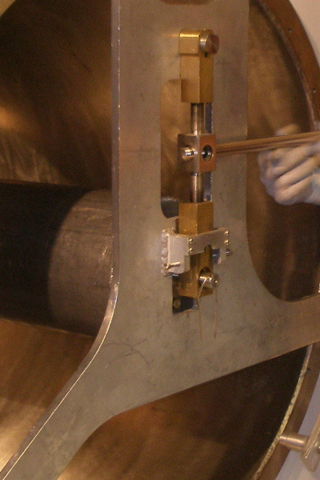
With one person holding the Male Insertion Tube to keep it from rolling, two persons obtain the Female Insertion Tube from the shipping crate and thread the two Tubes together. (See Illustration 24.) Do not over-tighten Tube connection, as it may be difficult to remove after gradient coil replacement.
| NOTE: | Each of the two pieces of the gradient insertion tool weighs less than 35lb (15.9kg). |
Illustration 24: Setting Up the Insertion Tube Assembly
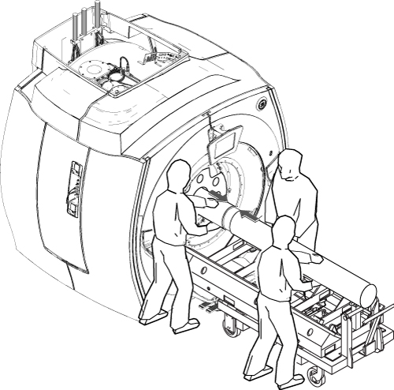
| ||||
| Do not force the threads. Instead, make vertical or horizontal adjustments to the Cart or Tube Support Bearing, as necessary, to make the threading easier. | ||||
Recheck the centering of the Cart left-to-right with respect to the magnet bore. Adjust cart longitudinal alignment if required.
Raise the Tube Jack and the Support Plate mounting bearing simultaneously to lift the XRMw gradient coil up. Keep the coil approximately level with the magnet bore during the lifting. (See Illustration 25.)
Illustration 25: Raising the XRMw Gradient Coil
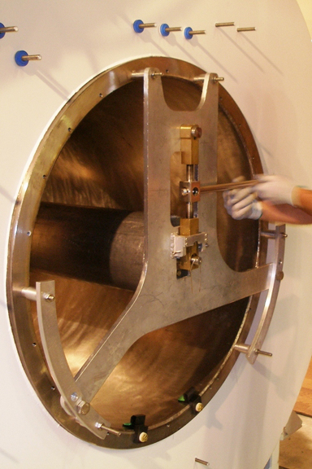
Remove two gradient mounting pads underneath the XRMw coil (one on each end of the magnet)prior to pushing the gradient coil.
Remove the last two wedges from the patient end and service end of the Magnet. The XRMw gradient coil should be able to rotate freely at this time.
Slowly push the XRMw gradient coil out of the magnet bore while watching the clearances to the left, right, top and bottom. Adjust the Tube Jack and Support Plate mounting bearing as required to keep the gradient coil from touching the magnet bore surface.
Rotate the XRMw gradient coil until the Return coolant line at service-end is oriented downwards.
Gradually lower the Tube Jack and the Support Plate bearing till the weight of the XRMw gradient coil settles on the Cart.
Properly secure XRMw gradient coil to Coil Cart with bracket (5357473).
| ||||
| Possible Equipment Damage or Personal Injury! | ||||
| Failure to properly secure coil to cart can result in equipment damage or injury. | ||||
| XRMw coil must be properly secured to coil cart. |
Using three (3) persons, move XRMw gradient coil and Cart out of magnet room.
Wipe the magnet bore using a clean towel and isopropyl alcohol.
Examine the electrical connection terminals at the XRMw gradient coil service-end. If necessary, clean up the terminal surface with isopropyl alcohol.
Attach three adapter plates (5338222) to the gradient coil patient end at 3, 9, and 12 o'clock positions with M10 x 20mm bolts. (See Illustration 26 and Illustration 28.) Attach one M10 nut to the bolts as shown in Illustration 27.
Illustration 26: Adapter Plate on Gradient Coil - Patient End
Illustration 27: Bolt with Nut Installed
Attach two adapter plates (5338223) to the gradient coil service end at the 3 and 9 o'clock positions with M10 x 20mm bolts. (See Illustration 28.) Attach one M10 nut to the bolts as shown in Illustration 27.
Illustration 28: Adapter Plates on Gradient Coil - Service End
Attach adapter plate (5338224) to the gradient coil service end at the 12 o'clock position with M10 x 20mm bolts. Attach one M10 nut to the bolts as shown in Illustration 27.
Remove the shipping brackets that are securing the XRMw gradient coil to the cart. (See Illustration 29.)
Illustration 29: XRMw Shipping Bracket
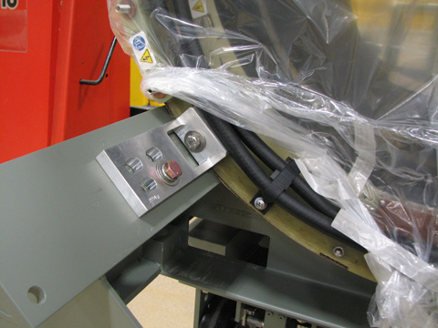
Remove the Gradient Coil Cradle fasteners, two per side, from the cradle. (See Illustration 30.)
Illustration 30: Removing Cradle Fasteners
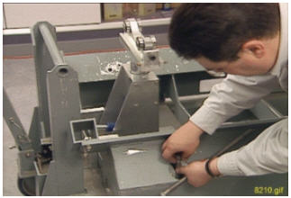
Use a vacuum cleaner to clean up the XRMw gradient coil in-and-out. Remove any possible metallic dust/shavings off the coil.
Obtain the two Tube Guide Roller Assemblies (5308402) and Mounting Plates (5161983, 5161985) from the Gradient Coil Insertion and Lift Kit's shipping crate. Make sure the Tube Guide Roller Assemblies are attached to the Mounting Plates. (See Illustration 31.)
Illustration 31: Roller Assembly and Mounting Plates
| ||||
| Make sure that all bolts that secure adapter plates to the installation plates are securely tightened. | ||||
Align the mounting holes of the Patient End Mounting Plate (5161985), including Guide Roller Assembly, with adapter plates (5338222), which are already attached to the gradient coil. Secure installation plate to the adapter plates using M10 x 20mm bolts and M10 nuts. (See Illustration 32.)
Illustration 32: Mounting Plate with Roller Assemblies - Patient End
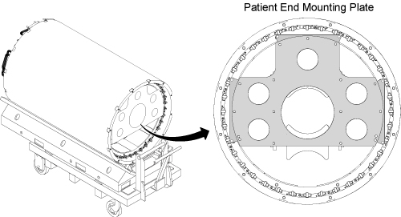
Align the mounting holes of the Service End Mounting Plate (5161983), including Guide Roller Assembly, with adapter plates (5338223 and 5338224), which are already attached to the gradient coil. Secure installation plate to the adapter plates using M10 x 20mm bolts and M10 nuts. (See .Illustration 33)
Illustration 33: Mounting Plate with Roller Assemblies - Service End
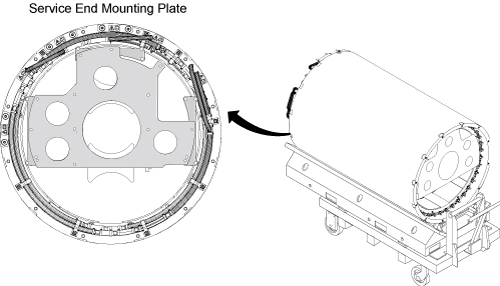
Obtain the Male Insertion Tube (2284929) and Tube Standoff (5191626).
Attach the Tube Standoff to the Male Insertion Tube using the four-inch, 0.375-16UNC Hex Socket Screw (5303993) included in the Gradient Coil Insertion and Lift Kit.
Once the Standoff is secured to the Tube, attach the Tube Pilot Shaft to the Standoff as shown in Illustration 34.
Illustration 34: Attaching Standoff to Insertion Tube
Remove the PVC shield from the brass thread of the Male Insertion Tube. (See Illustration 35.)
Illustration 35: PVC Shield for Brass Thread
Obtain Tube Support Plate Assembly 2284928-2 from the Gradient Coil Insertion and Lift Kit's shipping crate. Make sure two wing adapters (5339882) are attached with stainless steel 0.75”-16 x 1.25” long bolts. Secure the Tube Support Plate Assembly and winged adapters to the magnet flange at the service end with M10 studs, spacers, and M10 nuts. (See Illustration 36) The Y gradient cables will need to be removed from the magnet in order to attach the Support Plate.
Illustration 36: Attaching Tube Support Plate
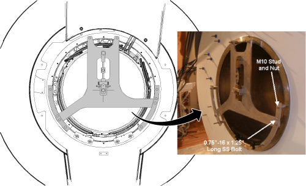
Adjust the Tube Support Plate Assembly's horizontal adjustment screws until the Tube Support Bearing is centered left-to-right. (See Illustration 37.)
Illustration 37: Adjusting Support Plate
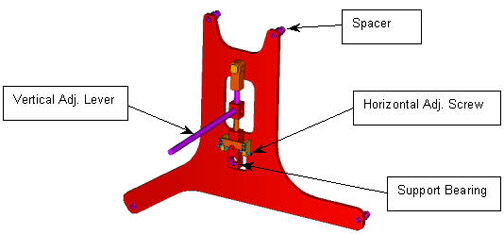
| ||||
| The jack on the Tube Jacking Assembly is ferrous. | ||||
| Personal injury or equipment damage may result if taken too close to the magnet. | ||||
| Keep as far away from magnet bore as possible when removing from magnet room. Always keep the Tube Jacking Assembly mounted and screwed to the aluminum coil cradle when used in the magnet room. |
Place Tube Jack Assembly (5191132) in the Cart. Make sure the back of the Jack Assembly fits properly into the Cart. (See Illustration 38.)
Illustration 38: Jack Assembly Placement
Maneuver the cart and XRMw gradient coil to the patient-end of the magnet. Position the cart in front of the magnet with a gap of at least 2 inches (50.8 mm) between the cart and the Magnet Interface Ring. The 2-inch gap is required for lower wedges installation. (See Illustration 39.)
Illustration 39: 2-inch Gap Between Cart and Magnet
Center the cart left-to-right with respect to the magnet bore.
Release the hand lever on the cart handle to set the brakes. This will keep the cart from moving after the cart is aligned with the bore.
Raise or lower the cradle of the Cart as required to align the two support tub sections (Tube Support Plate at the magnet and Gradient Mounting Plates at the XRMw gradient coil) vertically. (See Illustration 40,)
Illustration 40: Adjusting Height of Cart
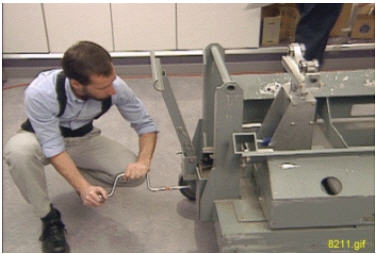
Slide the Male Insertion Tube through the Tube Guide Roller Assemblies at both sides of the XRMw gradient coil. Make sure the end with the Standoff and Pilot Shaft faces towards the magnet.
With one person holding the Male Insertion Tube to keep it from rolling, two persons obtain the Female Insertion Tube from the shipping crate and thread the two Tubes together. (See Illustration 41.) Do not over-tighten Tube connection, as it may be difficult to remove after gradient coil replacement.
Illustration 41: Setting up the Insertion Tube Assembly

| ||||
| Do not force the threads. Instead, make vertical or horizontal adjustments to the Cart or Tube Support Bearing, as necessary, to make the threading easier. | ||||
Push the complete Insertion Tube Assembly into the magnet bore. Get the Tube Pilot Shaft as close to (but not touching) the Tube Support Plate as possible. (See Illustration 42.)
Illustration 42: Complete Insertion Tube Assembly

Align the Support Plate mounting bearing with the Tube Pilot Shaft by adjusting the vertical height of the Support Plate bearing using the stainless steel lever, and/or raising or lowering the Cart.
Meanwhile recheck the centering of the Cart left-to-right with respect to the magnet bore. Adjust cart longitudinal alignment if required.
Push the Pilot Shaft through the Support Plate mounting bearing. Insert a nonmagnetic safety pin through the hole in the Pilot Shaft. (See Illustration 43.)
Illustration 43: Tube Pilot Shaft and Support Plate
Raise the Tube Jack and Support Plate mounting bearing to lift the XRMw gradient coil up. Keep the coil approximately level with the magnet bore during the lifting. Coil should be able to rotate freely once completely lifted off the cart. (See Illustration 44.)
Illustration 44: Raising the XRMw Gradient Coil
Rotate the XRMw gradient coil, if necessary, until the electrical connection terminals at the XRMw's service-end is oriented upwards.
Slowly push the XRMw gradient coil into the magnet bore while watching the clearances to the left, right, top and bottom. Adjust the Tube Jack and Support Plate mounting bearing as required to keep the gradient coil from touching the magnet bore surface.
| NOTE: | Be sure to keep hands and loose clothing away from Bore as coil is being moved into the magnet bore. |
Slowly push the XRMw gradient coil until it's close to the Tube Support Plate at Magnet Service End. Raise the Support Plate bearing to gain more clearance between the coil and the lower base plates if necessary.
At the magnet patient-end, attach the Gradient Alignment T-block abd the XRMw Radial Alignment Tool as follows.
Mount the Gradient Alignment T-block (5389303) to the gradient coil patient-end, using two M10x25 SS FHSCS (5389090-3) at -15deg and +15deg hole in the coil’s flange.
Mount the gradient alignment tool (5266402) to the magnet patient-end, using 2 M10x25 SS bolts (46-318508P20) at -15deg and +15deg hole in the magnet interface ring.
Illustration 45: Gradient Alignment Tools
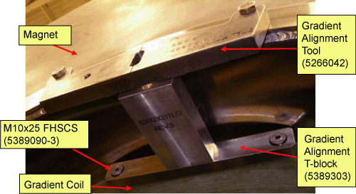
Carefully roll the gradient coil and stop the coil when the T-block(5389303) starts to make contact with the alignment tool(5266408).
Illustration 46: Aligning the gradient coil (front-to-back)
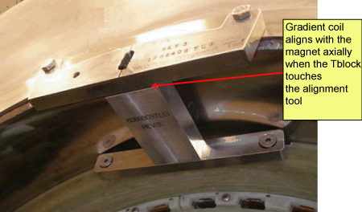
Align the coil clocking direction as follows.
Roll the gradient into position until the center hole of the Alignment T-block (5389303) aligns with the slot of the alignment tool (5266408) on the magnet.
Place the thumbscrew (part of the gradient alignment tool) though the slot and thread it into the Alignment T-block on the coil. Engage the rotational locks on the carriage assembly to hold the position
Illustration 47: Aligning the gradient coil (clocking)
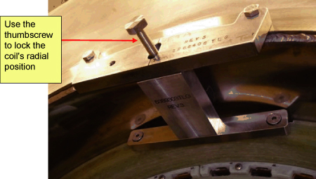
Place Gradient Mounting Pads (5352696) on the bottom of the bore (patient end and service end) of the magnet, with its outer edge 5mm +/- 1mm inward from the gradients outer edge.
Illustration 48: Gradient Mounting Pad
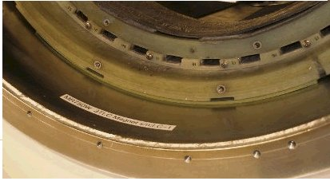
Make sure the gradient axial and radial alignment has not changed. Slowly lower the gradient coil onto the pads. Release the pressure on the beam, such that the coil is supported by the two mounting pads.
Illustration 49: Lowering the XRMw Gradient Coil with the Radial Alignment Tool
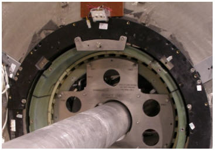
Install the Axial Stop Assembly for patient at the patient-end of the magnet as follows.
Attach two Axial Stop ASM to the magnet patient-end interface ring using one silicon-bronze M10x30 bolt (5363536-20) as Illustration 50. No washer is required. Apply Loctite 271 to the M10x30 bolt before putting it into the magnet interface ring. Tighten the M10x30 bolt to a torque of ~15 ft-lbs. In presence of magnetic field, use Hand-Tight (until resistance felt) plus 1/4-turn.
Drive the Axial Stop stud towards the gradient coil to a torque of 10~12 ft-lbs. In presence of magnetic field, use Hand-Tight (until resistance felt) plus 1 full turn with a non-ferrous screwdriver.
Tighten the M10 brass nut on the coil side of the Axial Stop bracket to 10~12 ft-lbs. In presence of magnetic field, use Hand-Tight (until resistance felt) plus 1/2-turn.
Illustration 50: Axial Stop
Perform Step 23 for service-end of the magnet to secure the stop.
Install the 6 wedges (with one M10 x 24 mm washer and one brass M10 x 35 mm hex head bolt per wedge) on the patient-end of the magnet flange in the order shown in Illustration 51. Tighten the brass bolts (in the same order the wedges were installed) securely to the stops and wedges.
Illustration 51: Installation Sequence of the Stops and Wedges
Repeat Step 25 at the service-end of the magnet to secure the wedges.
Remove Gradient Coil Insertion and Lift Kit from XRMw and Magnet.
Remove the Radial Alignment Tool and T-block. Return them to Gradient Insertion Kit shipping crate.
| ||||
| The busbar/gradient coil connection in very important. Always use new Nord-lock washers, Nord-lock washer should be in correct orientation, torque on the nut. | ||||
Re-install busbar cables to new gradient coil. Make sure that new Nord-Lock washers are used, and securely tighten the Nord-Lock washers to the gradient coil.
Illustration 52: Installation Sequence of the Stops and Wedges

Illustration 53: Nord-lock washers

| NOTE: | Observe the following:
|
Connect XRMw Manifold. (See XRMw Manifold Replacement.)
Remove all parts of the gradient insertion tool from the XRMw coil and return to crate. Properly store all components.
Re-install all passive shim trays into proper slots.
WARNING: Passive shim trays are highly ferrous. Heed all warnings in safety section 3.3.
Procedure for replacing shim trays can be found in the Magnet and Cryogens Subsystem Manual. For MR750w, see Direction Number 5670009. For MR450w. see Direction Number 5670004.
Connect B0 power supply to connection P304-1 on the magnet. Plug the B0 tester to AC power. Quench B0 coil in magnet by pressing and then holding the white button down for at least 1 minute.
Restore front body coil mounting brackets to the original location.
Illustration 54: Restore mounting brackets
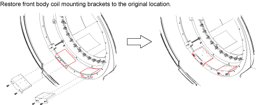
| ||||
| Restore the Dielectric Material to default according to HART
ID value recorded in Illustration 1 and Illustration 55. Then, set VC1, VC2, and VC3 to the center of rotation as Illustration 56. Illustration 55: Dielectric Material on Body Coil 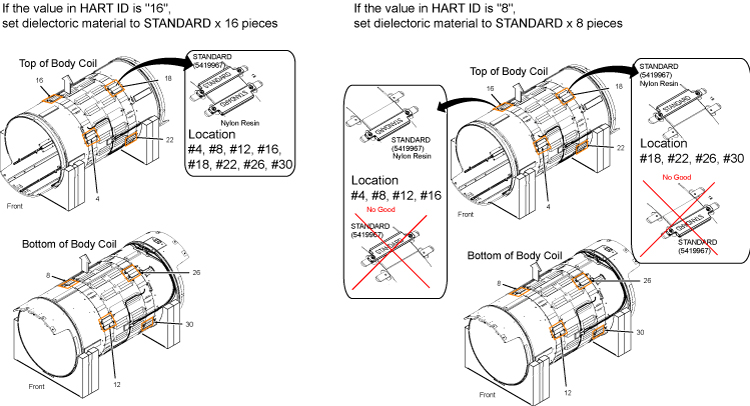 Illustration 56: Reset VC1,
VC2, and VC3 to the center 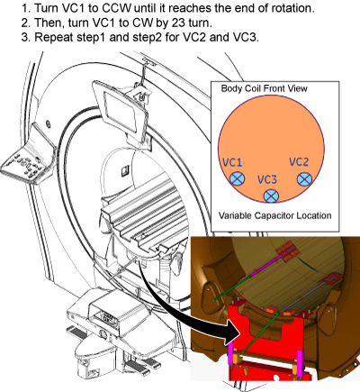 | ||||
Restore Body Coil. Refer to RF Body Coil Replacement.
Perform Body Coil Tuning and record fS11 and fS22. Try to tune Body Coil by referring to Body Coil Tuning Procedure. If VC1 or VC2 reached the end of the rotation, follow the instruction below per recorded fS11 and fS22 values.
128.15MHz ≤ fS11 or fS22 ≤ 128.4MHz: Increase dielectric material by one step.
Illustration 57: Increase dielectric material by one step

128.45MHz ≤ fS11 or fS22: Increase dielectric material by two steps.
Illustration 58: Increase dielectric material by two steps

127.4MHz ≤ fS11 or fS22 ≤ 127.65MHz: Decrease dielectric material by one step.
Illustration 59: Decrease dielectric material by one step

fS11 or fS22 ≤ 127.4MHz: Decrease dielectric material by two steps.
Illustration 60: Decrease dielectric material by two steps

| NOTE: | When replacing dielectric material to “Standard
x 8 pieces” or “Standard x 8 pieces + Lower Shift x8 pieces”,
the order is important. Follow the illustration below. Illustration 61: Dielectric Material Order
|
Remove the LOTO for the PGR PDU/Gradient Subsystem.
Reconnect the manifold of the gradient coil to the supply and return lines.
Refer to the HEC Coolant Fill and Coolant Leak Check to add coolant to the heat exchanger reservoir, turn on the heat exchanger pumps, and check the coolant system for leaks. The volume added should be close to that of the discharged coolant.
Restore magnet rear end bell. Refer to the Rear End Bell Removal and Install document for the proper procedure.
Refer to the Bridge and Longitudinal Drive Belt Replacement to restore the rear pedestal by attaching the rear pedestal to the magnet with the two bolts.
Perform the following calibrations:
| NOTE: | If necessary, perform Passive Shim by referring to Magnet manual. |
Perform a SaveINFO to capture new calibration values.